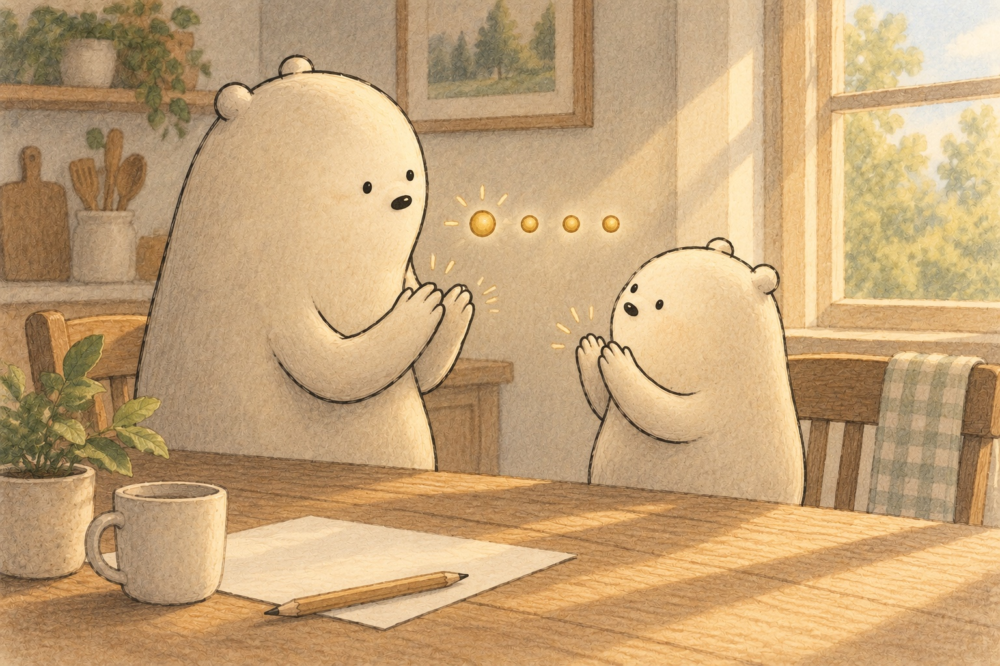
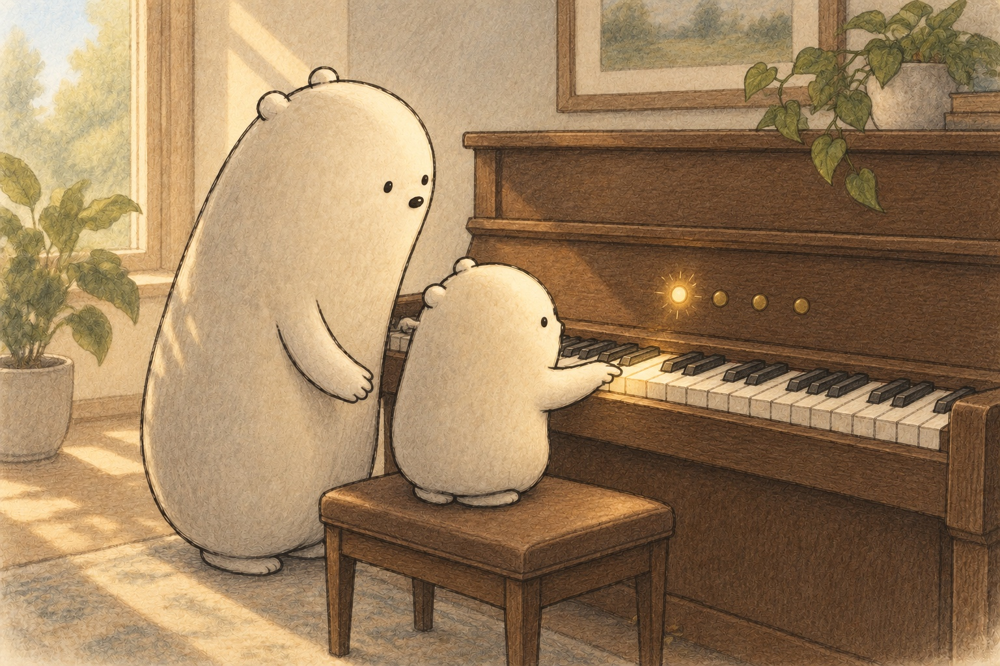
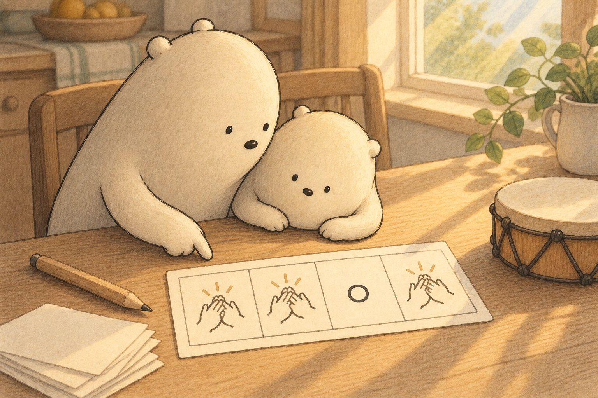
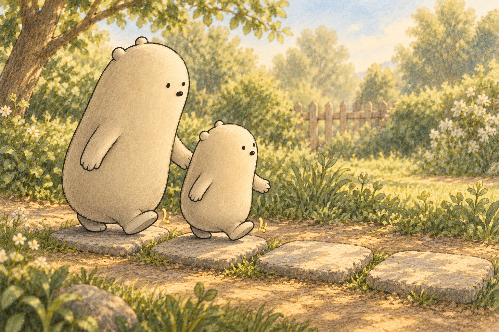
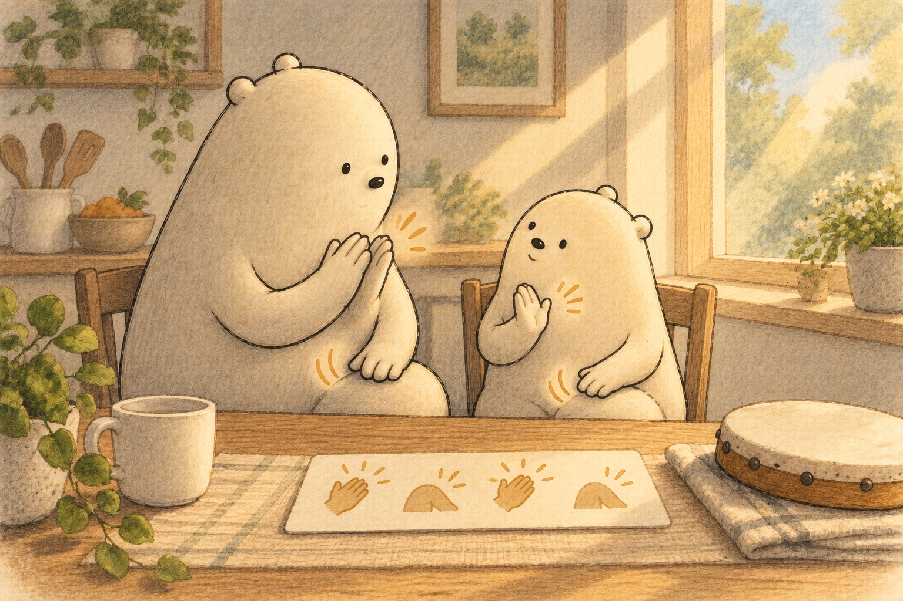

A faraway drum and a heartbeat offer two gentle clues about pulse.
What makes a beat feel steady?
Find Little listening to the drum and feeling the gentle pulse in their chest.
A little explanation & something to try
A beat is the steady pulse underneath a rhythm. A heartbeat can remind us what a pulse feels like, although a real heart speeds up and slows down. It is steady-ish, not a perfect metronome.
Try this. Put a hand on your chest for a quiet moment. Then tap a table at your own comfortable, even speed.

An even count gives every clap a place to land.
Why does ONE help us find our place?
Watch Big and Little clap while four small beat marks repeat nearby.
A little explanation & something to try
Musicians group beats so they can find their place. In 4/4 time, each bar has four beats: ONE, two, three, four. A stronger ONE can mark the start of the next group. Many songs use four, but not every song does.
Try this. Clap four even beats. Make ONE a little louder, then repeat the group.

A sound can land on ONE while the steady count continues.
Can silence belong inside a rhythm?
One piano key glows on ONE while the other counted beats stay quiet.
A little explanation & something to try
Yes. A rest is a counted place of silence. The beat keeps moving underneath it. Sound on counts one, two, and four with silence on three still makes a four-beat rhythm.
Try this. Clap one, clap two, stay silent on three, and clap four. Keep your counting steady.

Four boxes make a small pattern that can sound, pause, and repeat.
How can four boxes hold a rhythm?
Each box on the beat card holds one clap or one rest symbol.
A little explanation & something to try
Rhythm is a pattern of sounds and silences across a beat. It can use long and short sounds, claps and rests, then repeat. Musicians are pattern detectives: they count, group, notice, and repeat.
Try this. Draw four boxes. Put CLAP or REST in each one, play the row, and teach it to someone.
Pattern detectives at practice
Each sequence grows by the same step. Find the one missing count.
Four boxes make a small pattern that can sound, pause, and repeat.
Make a new count-by-2, count-by-5, or count-by-10 rhythm sequence with one blank.
1. Little’s clap counts grow by 2 each time. Which count comes next?
1, 3, 5, 7, ___
A small hint
Add 2 to each clap count.
2. Big marks every other count in a repeating rhythm. Which count is missing?
2, ___, 6, 8
A small hint
Start at 2 and add 2 each time.
3. A stack of beat cards grows by 5 each time. Which total comes next?
5, 10, 15, 20, ___
A small hint
Add 5 to the last total.
4. Little counts pattern cards in steps of 5. Which total is missing?
10, 15, ___, 25
A small hint
Add 5 after 15 and check that one more step reaches 25.
5. Practice taps are counted in steps of 10. Which total comes next?
10, 20, 30, 40, ___
A small hint
Add 10 to 40.
6. Big counts all the claps from several rounds in steps of 10. Which total is missing?
20, ___, 40, 50
A small hint
Add 10 after 20.
Count the rhythm you can feel
How Rhythm Is Math
A beat nearby
Boom-tap-tap-tap came softly through the wall. Little Wonderer put a hand on their chest. A heartbeat was already making a steady-ish pattern. It was not a perfect clock, but it offered a gentle clue: rhythm begins when sounds or movements meet a pulse we can feel.
Why is a heartbeat only a gentle clue for a beat?
A tick to count
Big tapped the table evenly. Little counted, “One, two, three, four.” Each number landed on a steady tick. That steady pulse was the beat. The claps could change, but the beat kept giving them places in time. Count was the tool that helped both Wonderers stay together.
What stays steady while the claps change?

Four make a bar
Musicians often gather beats into groups. In 4/4 time, one bar holds four beats. Little clapped ONE, two, three, four, making ONE a little louder. The stronger first beat pointed to the start of the group. Not every song uses four, but this group was easy to find again.
What does the louder ONE help a musician find?
Steady steps
Four even beats felt balanced, like walking left-right-left-right. At the piano, Little played one key on every beat. Next came a key only on ONE, then keys on one and three. The sounds moved around, yet Big’s quiet count stayed steady underneath them.
How can the sounds move while the beat stays steady?
Pattern detectives
Rhythm was the pattern placed across the beat: long or short, clap or rest, sound or silence, then repeat. A rest was not a lost beat. It was a beat of silence that still had to be counted. Little clapped one, two, rested on three, and clapped four.
Why does a rest still need to be counted?

Teach your rhythm
Little drew four boxes on a beat card. Each box held CLAP, pat, or rest. Then Little played the whole row and taught it to Big. Big repeated it. Rhythm was counting they could feel. Together they had become pattern detectives: count, group, notice, repeat.